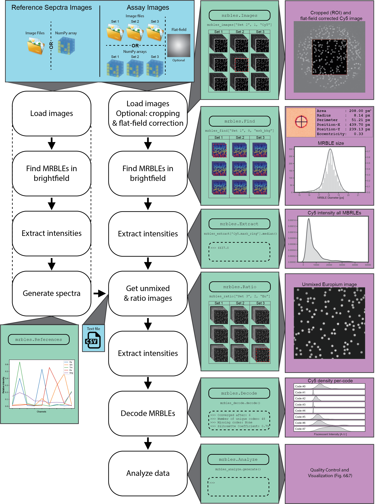

mrbles.pipeline¶
Pipeline Classes and functions¶
This files contains the pipeline for the MRBLEs analysis.

Functions
get_stats |
|
get_stats_norm |
|
get_stats_per_channel_and_code |
|
get_stats_per_code |
|
get_weighted_stats |
Classes
Analyze(dataframe[, seq_list, images, masks]) |
Analyze data MRBLE data and return per-code statistics. |
Decode(target[, seq_list, decode_channels]) |
Decode MRBLEs. |
Extract([function]) |
Extract data from images using masks. |
Find(bead_size[, pixel_size, border_clear, …]) |
Find MRBLEs in brightfield images. |
Images([folders, file_patterns, data, channels]) |
Load images into mrbles dataframe. |
Ratio(reference_spectra[, background]) |
Generate spectrally unmix ratio images. |
References(folders, files, object_channel, …) |
Create reference spectra. |
Settings(objects, object_names) |
Settings object. |